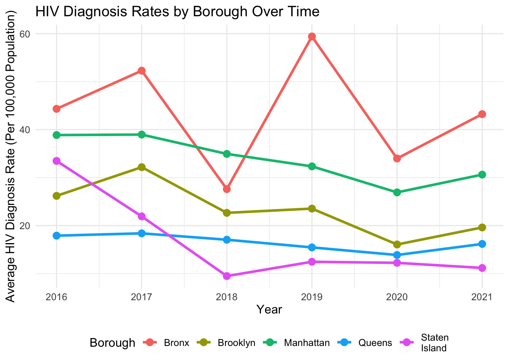

# Load the dataset
HIV_df = read.csv("./data/HIV_AIDS_Diagnoses_by_Neighborhood__Sex__and_Race_Ethnicity_20241118.csv")|>
janitor::clean_names()
UHF_df = read.csv("./data/UHF_Neighborhoods.csv")|>
janitor::clean_names()YEAR: Year of diagnosis. Borough: Borough information (some missing values). Neighborhood (U.H.F): Specific neighborhood identifiers. SEX: Sex of individuals. RACE/ETHNICITY: Racial/ethnic group classifications. TOTAL NUMBER OF HIV DIAGNOSES: Counts of HIV diagnoses. HIV DIAGNOSES PER 100,000 POPULATION: Rate of diagnoses normalized by population. TOTAL NUMBER OF CONCURRENT HIV/AIDS DIAGNOSES: Concurrent diagnoses of HIV and AIDS. PROPORTION OF CONCURRENT HIV/AIDS DIAGNOSES: Percentage of concurrent diagnoses. TOTAL NUMBER OF AIDS DIAGNOSES: Counts of AIDS diagnoses. AIDS DIAGNOSES PER 100,000 POPULATION: Rate of AIDS diagnoses normalized by population.
skimr::skim(HIV_df)| Name | HIV_df |
| Number of rows | 8976 |
| Number of columns | 11 |
| _______________________ | |
| Column type frequency: | |
| character | 10 |
| numeric | 1 |
| ________________________ | |
| Group variables | None |
Variable type: character
| skim_variable | n_missing | complete_rate | min | max | empty | n_unique | whitespace |
|---|---|---|---|---|---|---|---|
| borough | 0 | 1.00 | 0 | 13 | 2928 | 7 | 0 |
| neighborhood_u_h_f | 0 | 1.00 | 3 | 36 | 0 | 66 | 0 |
| sex | 0 | 1.00 | 3 | 6 | 0 | 3 | 0 |
| race_ethnicity | 0 | 1.00 | 3 | 22 | 0 | 11 | 0 |
| total_number_of_hiv_diagnoses | 6 | 1.00 | 1 | 4 | 0 | 306 | 0 |
| hiv_diagnoses_per_100_000_population | 74 | 0.99 | 1 | 5 | 0 | 1260 | 0 |
| total_number_of_concurrent_hiv_aids_diagnoses | 2 | 1.00 | 1 | 3 | 0 | 121 | 0 |
| proportion_of_concurrent_hiv_aids_diagnoses_among_all_hiv_diagnoses | 1893 | 0.79 | 1 | 4 | 0 | 305 | 0 |
| total_number_of_aids_diagnoses | 3 | 1.00 | 1 | 4 | 0 | 238 | 0 |
| aids_diagnoses_per_100_000_population | 71 | 0.99 | 1 | 5 | 0 | 991 | 0 |
Variable type: numeric
| skim_variable | n_missing | complete_rate | mean | sd | p0 | p25 | p50 | p75 | p100 | hist |
|---|---|---|---|---|---|---|---|---|---|---|
| year | 0 | 1 | 2016.36 | 3.7 | 2010 | 2013 | 2017 | 2020 | 2021 | ▅▂▂▃▇ |
HIV_cleaned_df = HIV_df |>
# Select rows where year 2016~2021
filter(year >= 2016) |>
# Convert Borough, Neighborhood (U.H.F), SEX, RACE/ETHNICITY to factors
mutate(
borough = as.factor(borough),
neighborhood_u_h_f = as.factor(neighborhood_u_h_f),
sex = as.factor(sex),
race_ethnicity = as.factor(race_ethnicity)
) %>%
# Convert necessary columns to numeric, handling non-numeric values
mutate(
total_number_of_hiv_diagnoses = as.numeric(total_number_of_hiv_diagnoses),
hiv_diagnoses_per_100_000_population = as.numeric(hiv_diagnoses_per_100_000_population),
total_number_of_concurrent_hiv_aids_diagnoses = as.numeric(total_number_of_concurrent_hiv_aids_diagnoses),
proportion_of_concurrent_hiv_aids_diagnoses_among_all_hiv_diagnoses = as.numeric(proportion_of_concurrent_hiv_aids_diagnoses_among_all_hiv_diagnoses),
total_number_of_aids_diagnoses = as.numeric(total_number_of_aids_diagnoses),
aids_diagnoses_per_100_000_population = as.numeric(aids_diagnoses_per_100_000_population)
)HIV_UHF_df = HIV_cleaned_df |>
inner_join(UHF_df, by = c("borough", "neighborhood_u_h_f" = "uhf_neighborhood"))
# Export the merged data
write.csv(HIV_UHF_df, "Merged_HIV_UHF_Data.csv", row.names = FALSE)# Group by Borough and Year and calculate average HIV diagnosis rates
borough_trends = HIV_UHF_df |>
group_by(borough, year) |>
summarise(Avg_HIV_Rate = mean(hiv_diagnoses_per_100_000_population, na.rm = TRUE))## `summarise()` has grouped output by 'borough'. You can override using the
## `.groups` argument.borough_trends## # A tibble: 30 × 3
## # Groups: borough [5]
## borough year Avg_HIV_Rate
## <chr> <int> <dbl>
## 1 Bronx 2016 44.3
## 2 Bronx 2017 52.3
## 3 Bronx 2018 27.6
## 4 Bronx 2019 59.4
## 5 Bronx 2020 34.0
## 6 Bronx 2021 43.2
## 7 Brooklyn 2016 26.2
## 8 Brooklyn 2017 32.2
## 9 Brooklyn 2018 22.7
## 10 Brooklyn 2019 23.5
## # ℹ 20 more rows# Plot HIV rates by Borough over time
ggplot(borough_trends, aes(x = year, y = Avg_HIV_Rate, color = borough)) +
geom_line(size = 1.2) +
geom_point(size = 3) +
labs(
title = "HIV Diagnosis Rates by Borough Over Time",
x = "Year",
y = "Average HIV Diagnosis Rate (Per 100,000 Population)",
color = "Borough"
) +
theme_minimal() +
theme(
text = element_text(size = 12),
legend.position = "bottom"
)## Warning: Using `size` aesthetic for lines was deprecated in ggplot2 3.4.0.
## ℹ Please use `linewidth` instead.
## This warning is displayed once every 8 hours.
## Call `lifecycle::last_lifecycle_warnings()` to see where this warning was
## generated.